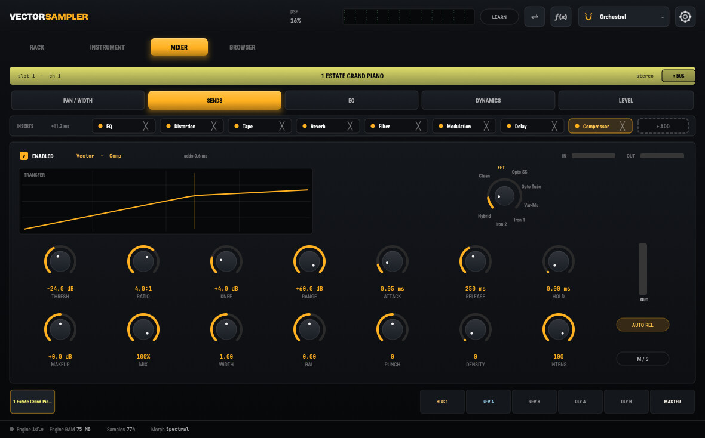

VectorComp
A new approach to compression. A single, always-stereo dynamics engine that morphs continuously through eight classic compressor characters along one signal path — a 24-coordinate character map, steered by one Character knob. Not another menu of emulations, but one engine that travels the whole space between them.
The Problem
Analog-modeling compressors almost always ship as a menu of discrete emulations: a smooth optical unit, a punchy fast unit, a warm vari-mu unit — each a separate signal path you select with a switch. You get the voices the designer chose to model and nothing in between. Worse, running several of those models at once means several detectors, several sets of smeared transients, phase error where their outputs are blended, and several times the CPU.
There has never been a clean way to ask: what lives halfway between a fast, aggressive character and a slow, gluey one? In a menu of fixed models, that question has no answer — the space between the presets simply doesn't exist.
Key Features
- One engine, one signal pathNever multiple models crossfading their audio; the morph interpolates coefficients, not outputs, so there is no double-detection, transient smear, or phase error
- A continuous Character knobTravels through eight reference voices: a transparent origin, a punchy fast character, two optical characters, a clean vari-mu warmth, two big-iron vari-mu characters, and a hybrid mastering character
- A transparent "Ideal" originThe literal zero of the space: perfectly clean, exactly the ratio, knee, and times you dial, with zero added harmonics — every character is that origin plus a displacement
- 24 character coordinatesSpanning six mechanisms (detection, transfer curve, temporal response, gain-cell realization, coloration, and stereo coupling), covering every audible degree of freedom a compressor has
- Always-visible controlsThreshold, Ratio, Attack, Release, and Knee on every character; grab one to hold an absolute value across the morph and reach hybrid characters that never shipped in hardware
- Full stereo toolkitGlobal Mid/Side mode, basis-paired Width/Balance, a frequency-dependent stereo-link crossover, a parametric detection-side EQ, external-key support, and lookahead
- Living analog behaviorA stateful transformer model with low-end bloom, a harmonic stage that growls only when the unit is working, and a continuous Drift/Age control that makes every instance slightly different
- Perceptual macrosPunch, Density, and Intensity drive whole groups of coordinates along ear-meaningful axes, atop fixed 4× linear-phase oversampling and a proven-stable feedback solver
Read the White Paper
How a single mathematical model reaches eight classic compressor characters — and every stable point in between — from one transparent origin.
Read the VectorComp White PaperPart of the OTTO / IDA Signal Path
The VectorComp is the bus and master dynamics engine inside OTTO and an opt-in option in IDA. The same engine is also packaged as a standalone VST3, AU, CLAP, and AUv3 plugin in LOUIS, so it can be used on any track in any DAW.
The Engine
VectorComp today runs as an insert inside the instruments it was built for. LOUIS is the same engine wrapped as a standalone plugin.
